DAY 2
Delphine Coille
Agenda - reminder
Day 1 - Create a first application
- Bonita solution and Bonita components
- Start a project with Bonita
- Introduction to BPMN 2.0
- Introduction to data management
- User interface: forms
- Users managements (Actors)
- Connectors
- Introduction to applications
Agenda - reminder
Day 2 - To go further in the development with Bonita
- Architecture of Bonita platform
- Process design and automation
- Advanced data management
- Extensions
- User interface
- Deployment
3-Tier architecture
Helps separate the process, data and user interface layers
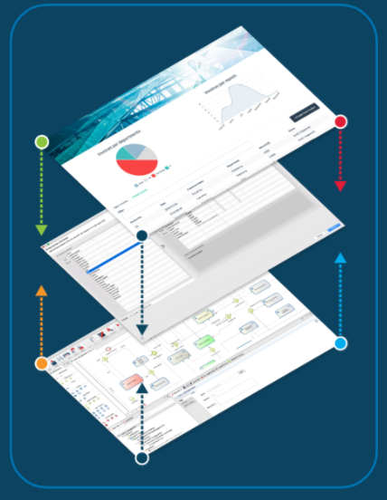Bonita Runtime
Available on premise or in the cloud
Tomcat  + Bonita applications + Bonita Engine + Database
+ Bonita applications + Bonita Engine + Database
Package Tomcat or Docker image to simplify the installation of the server
Bonita Runtime

API Bonita Engine
- Unique way to communicate with the Bonita engine (JAVA)
- Community edition: packages start with org.*
- Used with
- Groovy scripts
- Connectors
- Rest Api Extensions
- External java client to communicate with the engine
Most used engine APIs
- Login API: access to Bonita engine
- ProcessAPI: actions linked to the process
- IdentityAPI: manage the organization (users, groups, roles)
Documentation: Bonita Engine architecture
Bonita REST API
- operations on Bonita Engine from a language other than JAVA or in a web application in combination with Ajax
- Many APIs available (bpm, bdm, identity, system...)
- 4 operations: GET, POST, PUT, DELETE
- includes BDM REST Access Control (Enterprise)
BDM REST API: usage
Retrieve information about an object, its structure, its data
/!\ the REST API provides data access, not addition or update /!\
Project composition in Bonita Studio
A Bonita project is a  project with:
project with:
- Name, version, description
- Maven IDs : groupID, artifactID
Projects are integrated into a local or remote workspace
Automatic recovery of dependencies
Collaboration on the project
Projects can be shared using SVN or Git from Bonita Studio
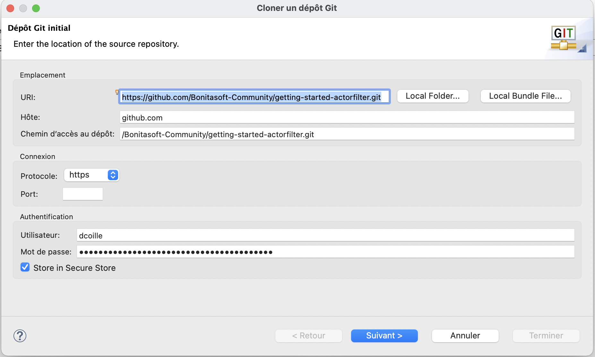Automate processes: events
Occur throughout the process
Asynchronous

Boundary event: triggers an alternative path
Call activities and sub-processes
Trigger a sub-process
Parent process put on hold
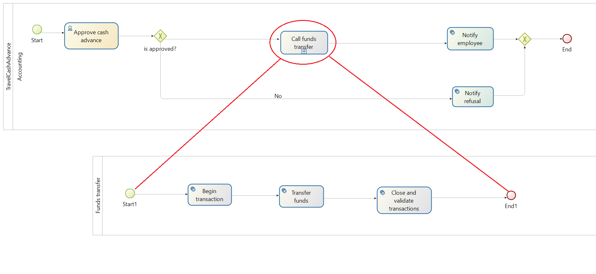Call activities and sub-processes
Data mapping
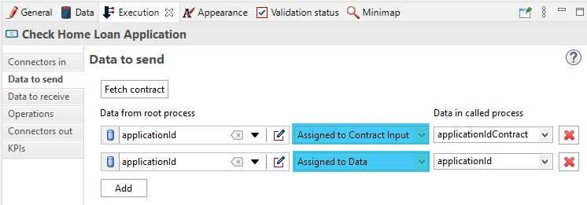Iterations
3 types of iterations :
- Standard loop
- Parallel multi-instanciation
- Sequential multi-instanciation

Exercise 7
Adding a timer to a process
Business datacycle - reminder
Develop with Bonita BDM
- Relations : composition and aggregation
- Unique constraints
- Queries: by défaut or custom
- Indexes
- Accessible by REST API if integrated with a third party application or with pages
Persistence managed by Bonita Engine via Hibernate libraries and the database
Never read or write directly from the BDM database but use the APIs
Develop with Bonita BDM
- 2 ways of loading data: eager or lazy 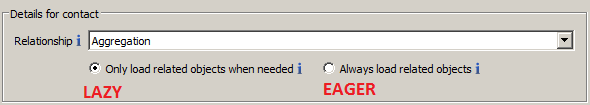
| 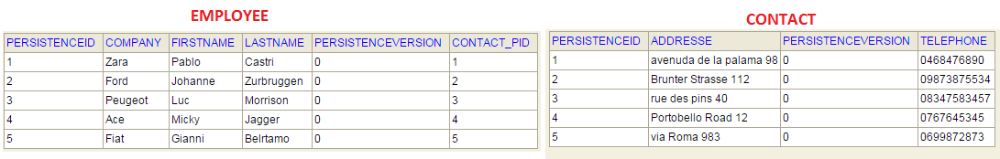 |  |
API/bdm/businessData/com.training.model.Employee/{persistenceId}
Constraints of the contract
Constraints = specific rules for expected data value's validation
Defined by Groovy scripts
The example of form data
- Stores and processes data displayed and updated in UIs
- Accessible in the user web browser
- Can be any type of JavaScript objects
- Initialized and updated by: user inputs, REST API calls, JavaScript code
- Never persisted
Architecture overview
Sending data from the form to the business variable
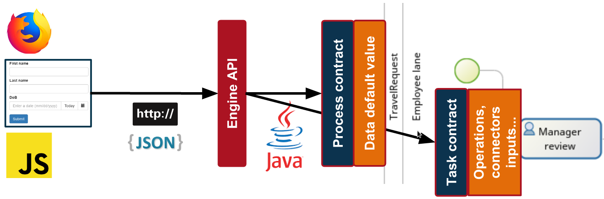Other data type: documents
- Bonita provides a lightweight content management system
- References to documents are part of the process definition
- At runtime documents can be initialized, updated...
- Unlike BDM, documents are associated with a given process instance
Exercice 8
Add constraints to a contract
Extensions in Bonita
Allows to adapt the project to your needs by integrating, among others:
- Connectors

- Actor filters
- Custom themes
- REST API Extensions

Extensions in Bonita
Bonita Studio extension manager to centralize and use them
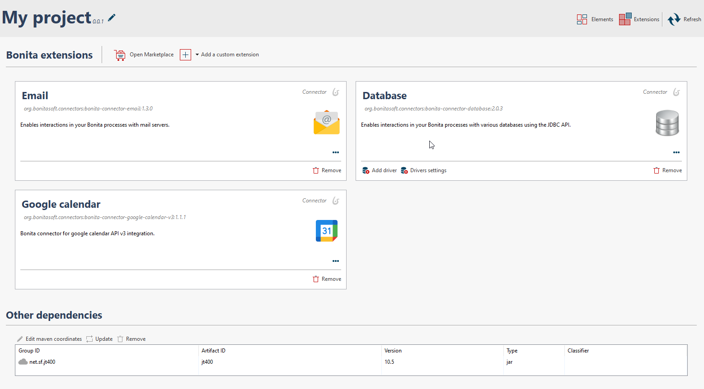Extensions in Bonita
Retrieve the extensions in 2 ways:
|
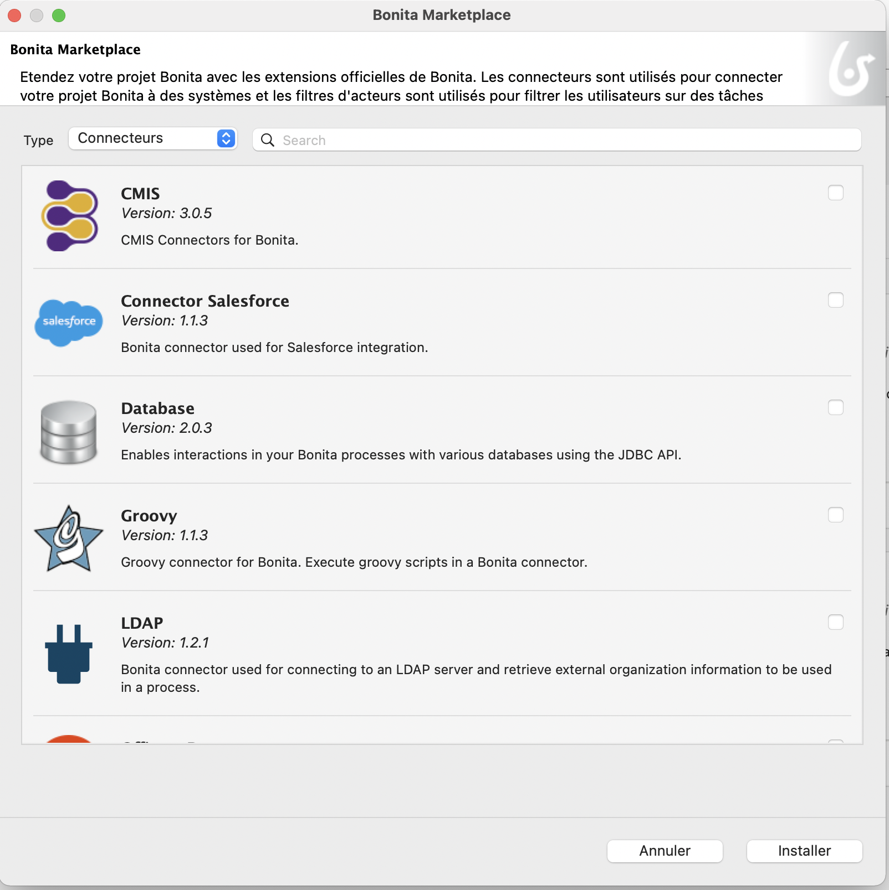 |
Develop an extension
Usage of Maven archetypes (templates)
Developped in your IDE
Stored locally or on remote repositories:
- Private or public Maven repository
- GitHub package
Specificities of REST API Extensions
Created in your IDE and imported in Bonita extension manager, or developed from Bonita Studio
| 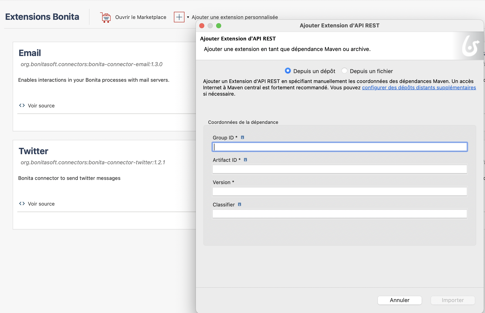 |  |
Example of extension: the actor filter
Completely override the actor configuration
Produce a list of users based on input information and an internal logic
Executed when process reach a step to which the filter is mapped
Can be "refresh" using Engine API
Actors vs actor filters
| Benefits | Limitations | |
|---|---|---|
| Actors | Always up to date with organization | Mapping that can not rely on business/process data |
| Actor filters | Mapping that can be based on business/process data | Executed only once at task instantiation |
Exercice 9
Add an actor filter
Structure of the user interface
- Forms, pages and fragments : structure
- Containers and widgets : containing
- Variables, properties and assets : behaviour
Pages
Built in the same way as a form
Main difference is the execution context:
- Forms have information about process definition or process instance and task instance
- Pages have no context information
Pages can get BDM and process information or trigger actions using REST APIs
Group several pages together with a menu in order to build an application
Containers and Widgets
A set of widgets and containers available out of the box
Containers used to group widgets or their behavior
Custom widgets can be created with the UI Designer
You can also reuse contributions shared on community website
Fragments
Keys to reusability and time saving
Parts of element composed of widgets and/or containers
It has its own configuration and data...
Or expose the data in the pages that include them...
Interfaces between application's artefacts
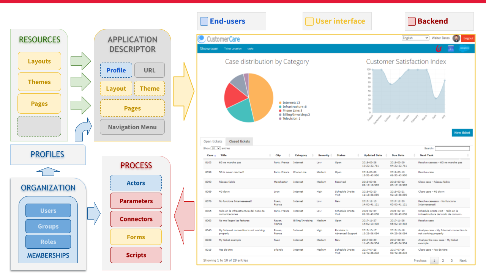Exercise 10
Enrich the application
Process Deployment
Main steps for process deployment:
| 1. Process configuration 2. Bar file generation |
Studio |
| 3. Bar deployment 4. Process configuration 5. Process activation |
Runtime - Admin app |
Application deployment
2 types of application deployment
- Deployment for testing purpose in a LOCAL environment from the Studio
- Deployment in a DEVELOPMENT or PRODUCTION environment from the Portal
Deployment steps on the server
Organisation then profiles
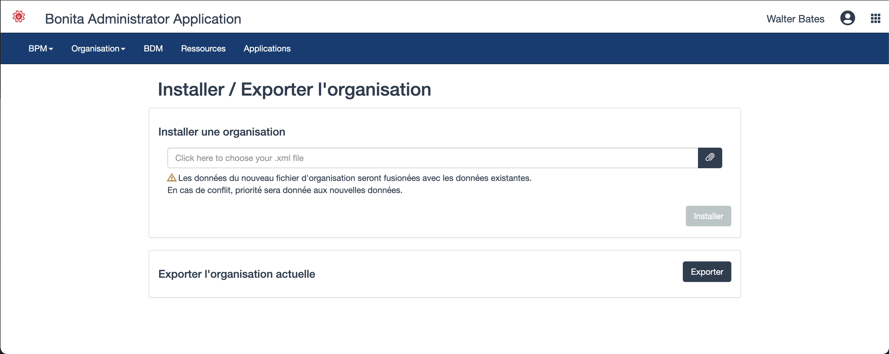Deployment steps on the server
API extensions then pages, layout et thèmes

Deployment steps on the server
Business data model then processes

Deployment steps on the server
Definition of the application
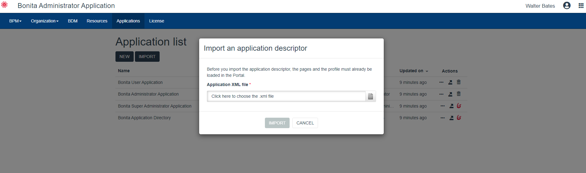Thank you for your attention
Any questions?
Feel free to post them first on our dedicated Discord channel #bonita-camp-english,
and then please post them on Bonitasoft community website.
Extra Resources:
- Documentation - documentation.bonitasoft.com
- Corporate Website - bonitasoft.com
- Community Website- community.bonitasoft.com
- GitHub - github.com/bonitasoft-community